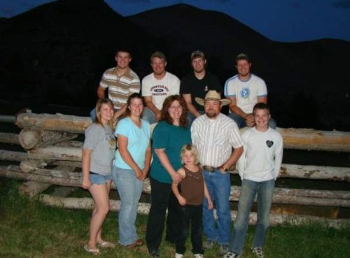
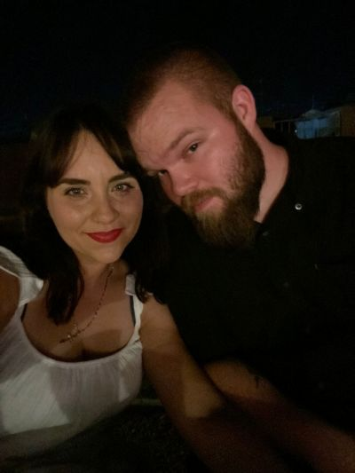
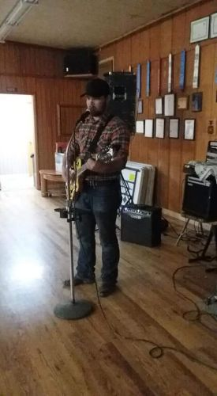

About Me

Growing Up
I was born in Sunvalley, Idaho in October of 1996. From there, I was
taken to our family ranch in the Phasimeroi Valley in the center of
Idaho. The ranch was about 1300 acres in size and consisted of multiple
hay fields, a large pasture, corrals, and a calving barn. A calving barn
is simply a small barn used to help cows give birth to new calves.
Living on a ranch that size involved a lot of playing outside and a lot
of work. I learned how to drive a stick shift truck by the time I was 7
years old. Before that, my dad would put his Dodge Cummins truck in
4-Low and let it crawl through the pasture while I steered and he threw
hay to the cows from the bed. Eventually I learned to work the clutch
and shifter and was able to drive the truck around the ranch whenever he
needed me to. The town I lived in was called May and my family was half
the population of that small town. I was fortunate to grow up the way I
did. I learned the value of hard work and effort. My dad taught me
traditional values that live inside of me to this day. My mom says me
and my siblings were 'feral' children because we had a lack of
supervision at the ranch, but fortunately all 8 of us made it out alive,
but not without a few scars. At the age of 9 I had an unfortunate run-in
with a door, that is my sister kicked it and the handle pinched my
finger against a concrete wall, and the top part of my right ring finger
was cut off. I also have scars from dog attacks, cat attacks, and even
hitting my head against a rock a time or two. When I was 11 years old,
we sold that house and the land because of my dad's health concerns. He
was type-1 diabetic and was degrading in his health fairly quickly. We
moved to Challis, Idaho which was an hour and a half from the original
ranch, but put us within 15 minutes of my Grandparents, my Dad's mother
and father. From that point on I was raised on a 90 acre ranch. I spent
my spare time in all levels of school wrestling. Once I reached Middle
School I added football to my list of activities. I even attempted to
run track at the end of my sophomore year, but a combination of
oversized cleats and a teammate that couldn't seem to put the baton into
my hand properly resulted in a tumble that left my shoulder dislocated
with a torn tendon that would require surgery. None the less I went on
to play football just a few months later. I was a varsity football
player and varsity wrestler for the entirety of my high school career
and never attempted any other sports after my track running incident.
That leads me to graduation. I wasn't the most academically proficient
student, but I graduated either way and went on to the next phase of my
life.

After Graduation
Immediately upon graduation I moved out of my Dad's house and got an
apartment with one of my older brothers. I also got a job at the same
company as that brother making work commutes easy. I worked at a metal
fabrication and powder coating company that built and delivered products
across the United States. We made products such as metal benches, picnic
tables, garbage can covers (like those used at parks), and even
dumpsters. The company also allowed people to bring in products to be
sandblasted and powder coated. When I first started there I was a
general worker. I swept floors, cleaned up scrap metal, and from time to
time I got to help the welders with a few projects. I was fortunate to
learn how to operate a break press for bending metal pieces and because
of my background on a cattle ranch I already knew how to weld. I didn't
get to do any large welding products because I was never certified to do
so, but they let me help them anyway. For the last month of my
employment there I was moved to the night shift as a sandblaster. That
was a fun job. I got to spend the entire night inside of the
sandblasting room in a protective suit shooting pressurized sand at
pieces of metal, such as metal doors, car pieces, and little pieces used
in our own products. While I did enjoy this job I felt like I needed to
move onto something else. I contacted a local Marine Corps recruiter and
within a couple of months I was shipping of to San Diego to become a US
Marine. I rode in an airplane for the first time that I can remember and
landed in the San Diego airport. I spent several hours waiting for a
drill instructor to come and get me along with the other hundreds of
young men who were there to become Marines. Finally, the time came and
he arrived. We were taken to MCRD San Diego where we were trained to
become Marines. After bootcamp I was shipped to Camp Pendleton where I
underwent Marine Combat Training for a month. Then it was to Fort
Leanordwood to learn how to do my assigned job as a motor vehicle
operator. I spent the first year of my fleet assignment after Fort
Leanordwood at Camp Fuji, Japan. I then spent the last of my time in the
Marine Corps in Yuma, Arizona. While in Yuma I met my wife. We got
married shortly after I was discharged from the Marines an moved back to
Challis, Idaho. Back in Challis I began to work as an underground miner
with a couple of my other brothers and a family friend. I learned to
operate a jack leg, an underground loader, a surface loader, and even
learned how to use dynamite. From there I took my wife and young
daughter to Idaho Falls, Idaho where I started college for the first
time. At this point I was already 23 years old and most of my former
high school class mates were already finished with their college
careers, but that wasn't going to stop me from going forward with it. I
only spent a year in Idaho Falls before moving back to Yuma so my wife
could be closer to her family. I had only completed one semester at
BYU-Idaho at this point. I finished another semester online before
dropping my classes and moving on. In Yuma, I worked as a security
officer for a local casino. While working at the casino my oldest son
was born and welcomed into my young family. My time at the casino was
cut short because of an outbreak of Covid that resulted in the casino
shutting down for some time. This put me into a difficult position and
forced me to look for employment elsewhere. That is when I found my
current job that leads me into my most recent phase of life.
Click the picture to meet my family.

Where I am Now
For 5 years I dedicated my career to the Arizona Department of
Corrections while working as a Correctional Officer at the Lewis Complex
in Buckeye, Arizona and most recently in the Yuma Complex in San Luis,
Arizona. I spent 7 weeks in a training academy for the Department of
Corrections where I learned how to be a Correctional Officer. It may not
have given quite the challenge that Marine Corps bootcamp did, but it
was a good experience that helped me to gain the knowledge I needed to
work within an Arizona prison. Once I completed the academy I was
assigned to the Lewis Complex. I spent 5 months working at the Barchey
unit which is a medium custody protective custody unit. I commuted 2
hours every day to get to the unit, worked 12 hours in the day, then
drove the two hours back home. I was then transferred to the Yuma
complex where my commute was shortened to only 20 minutes. I served at
the Yuma complex for the next 4 1/2 years. While there I was able to
work at every custody level available at the complex, which are minimum,
medium, and close custodies. I was able to work within a detention unit,
or as it's commonly known 'the hole'. I thrived and was well recognized
by my supervisors for my hard work and strong adaptability. I credit
both the Marine Corps and my upbringing for my ability to adapt and put
in my best effort. I started attending college again during this time
and completed my Associate's in Computer Science at the end of 2024. I
then enrolled with Grand Canyon University for Software Development.
This is where I am currently studying in hopes to recieve my Bachelor's.
In 2024, while living in Yuma and working at the Yuma complex, I
received an upsetting phone call. My Dad, who has battled severe health
issues his whole life, was in the ICU in Salt Lake City. He had been in
and out of the hospital including the ICU many times in his life, but
this time was different. I drove the 10 hours to Salt Lake City on my
own because my wife was attending my daughter's end of the year ballet
recital. While driving, I decided a prayer would be the best thing I
could do at that time. I still felt as though my Dad would simply get
better and go home as he had done many times in his life, but I prayed
anyway. In my lengthy prayer I told God that if He would be willing to
preserve my Dad's life long enough for me to see him one more time I
would be greatful, but I also prayed that if God decided to take him
before I got there I would still be greatful because my Dad would no
longer be in pain. Fast forward a few hours, I was only 10 minutes away
from the hospital and I received the phone call that I never wanted. My
brother called with a shaky voice and told me that my Dad had passed
away. He went into cardiac arrest and because of his DNR, they wouldn't
do CPR on him. I immediately fell into deep despair. I had never felt
that kind of desperate pain before. I began yelling and cursing, blaming
God for not preserving his life for 10 more minutes and wait for me to
get there. After a minute I remembered my prayer and apologized to God
for my outburst, but I couldn't get rid of the desperate pain that I
felt. My eyes were blurry and my mind was racing. My body was shaking
and I was afraid that I was going to crash my car driving 75 miles per
hour down the freeway. I prayed again that God would calm me so I could
arrive to the hospital safely. Immediately my mind was clear, my vision
was clear, and my body was still. I didn't feel peace of comfort only
pure focus. As soon as my focus cleared I heard a voice in my head that
told me I would see my Dad before he died. This confused me because
there is no reason I should let a thought like that cross my mind. It's
only later that I realized it was the voice of God that told me I would
see my Dad. Within a minute of hearing that voice tell me I would see my
dad once more before his death, my brother called me again. He said, "I
don't know why or how, but Dad is alive." He continued to explain that
as they were mourning over my Dad's body, his heart randomly began
beating again, and he began breathing again. As my brother hung up the
phone after telling me to drive safe, I felt a loving holy presence
unlike any I have ever felt before. I began to weep with joy as I felt
God wrap his arms around me in love. I was blessed to be able to spend a
day and half with my Dad before God called him home. I drove the 10
hours home after taking a day to mourn with my family. I picked up my
wife and two children and drove to Idaho for the funeral. We buried my
Dad on my Grandpa's ranch and spent time celebrating the great life that
he lived. A few months later my second son was born. This was a joyous
and concerning time. My youngest son, as we learned shortly later, was
born with a very rare genetic mutation that causes an overgrowth in
several limbs and in his brain. He is prone to seizures and has severe
developmental delays. It has been a long process in taking care of this
young man, but I know that God has blessed us with the life of that
young man. We will continue having faithing and trusting in God as we
continue forward in this life.
Click the Image to See the My Hobbies Page
